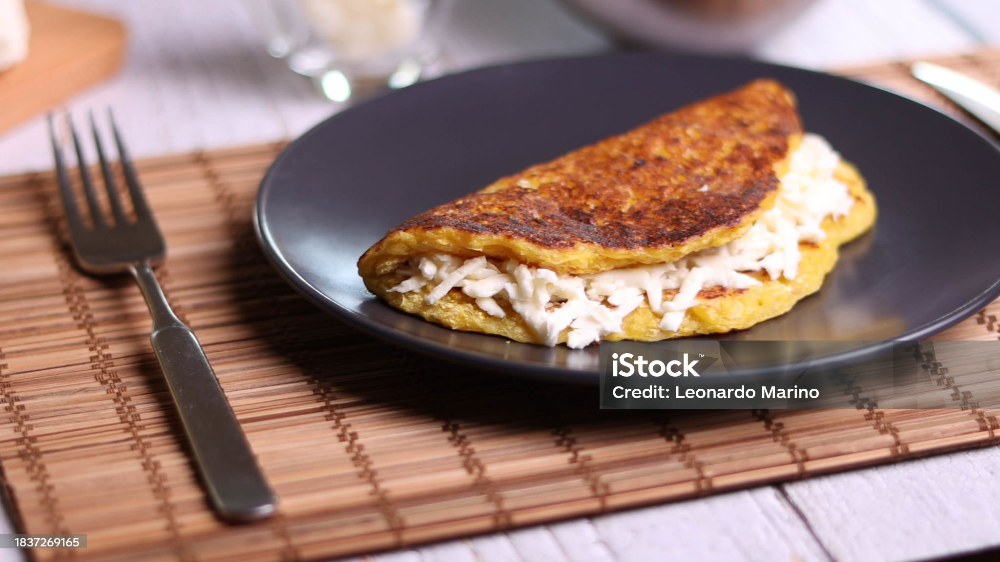

Estas son mis recetas, las cuales fueron elaboradas por Emanuel
Torta de Mango

Ingredientes
- 5 mangos maduros, pelados y sin la semilla
- 2 tazas de harina de trigo
- 1 taza de azúcar
- 4 huevos
- 500 gr taza de mantequilla
- 1 cucharadita de polvo de hornear
Preparación
- Precalienta el horno a 180°C.
- Corta los mangos en trozos y tritura en la licuadora.
- Mezcla los ingredientes secos en un bol.
- Agrega los huevos, mantequilla y mango triturado.
- Vierte la mezcla en un molde y hornea por 40 minutos.
- Deja enfriar antes de desmoldar.
- Decora con rodajas de mango si lo deseas.
- Disfruta de la deliciosa torta de mango.
Pasta con Frijoles

Ingredientes
- 200g de pasta
- 1 taza de frijoles cocidos
- 1 tomate
- 1 diente de ajo
- Sal y pimienta al gusto
- Aceite de oliva
- Queso rallado (opcional)
- Albahaca fresca (opcional)
- Salsas al gusto(Opcional)
Preparación
- Cocina la pasta según las instrucciones del paquete.
- Sofríe el ajo y el tomate picado.
- Escurre la pasta y añádela a la mezcla de frijoles.
- Agrega los frijoles y mezcla bien.
- Sirve caliente, espolvorea con queso y albahaca si lo deseas.
- Disfruta de tu pasta con frijoles estilo venezolano.
Cachapa

Ingredientes
- 2 plátanos maduros
- Queso llanero
- Jamon
- Carne Mechada
- Sal al gusto
- Aceite para freír
- Mayonesa, Ketchup, Mostaza (Salsas)
Preparación
- Pela y corta los platanos en forma transversal.
- Tritura los platanos con una prensa o plato llano
- Calienta el aceite en una sartén.
- Vierte porciones y fríe hasta dorar por ambos lados.
- Rellena con queso, jamón y carne mechada.
- Agrega mayonesa, ketchup y mostaza al gusto.
- Disfruta de tu cachapa con plátano.
Video de Preparación